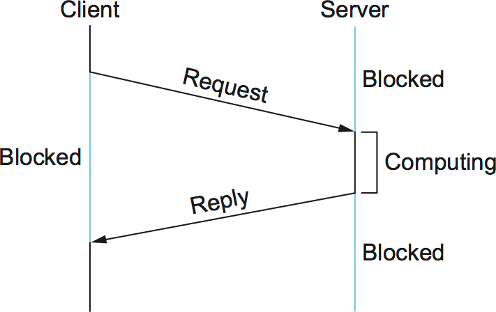
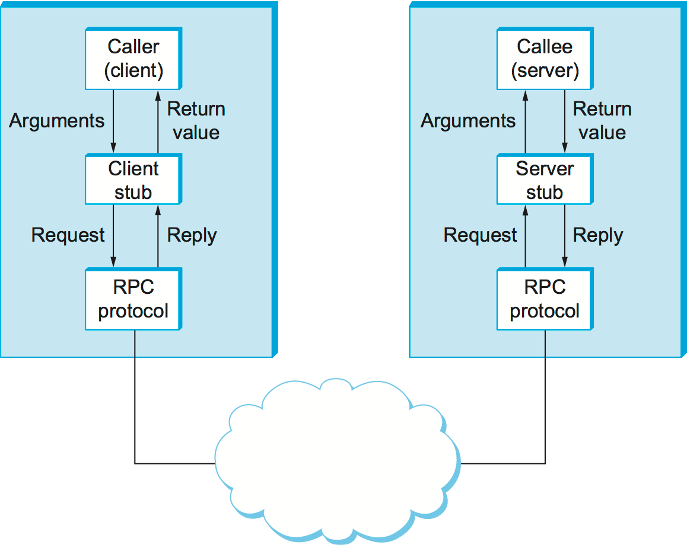
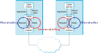

Presentation Mechanisms for Distributed Systems
Distributes Systems — Module 2
A.Y. 2024/2025
Giovanni Ciatto
Compiled on: 2024-11-20 — printable version
Context
-
Nodes in distributed systems may be implemented in different languages (e.g. C, Java, Python, etc.)
- possibly running on different platforms (e.g. Python, JVM, Node, etc.) and OS (e.g. Windows, Linux, etc.)
- possibly using different data representations conventions (e.g. big-endian, little-endian, etc.)
-
As long as nodes comply to the same communication protocols and patterns, technological issues should not be a problem
- presentation mechanisms are responsible for representing data in a common format
- in order to exchange information smoothly between heterogeneous nodes
- presentation mechanisms are responsible for representing data in a common format
-
So far all examples have been in Python (for simplicity)…
- so, in practice, the “common format” didn’t need to be explicitly defined
-
… but, in the real world, we need to serialize and deserialize data explicitly into/from a common format
- this is the role of data interchange formats, such as:
- JavaScript Object Notation (JSON) (we will use this one)
- Yet Another Markup Language (YAML) (later renamed in “YAML Ain’t Markup Language”)
- eXtensible Markup Language (XML)
- Type–length–value (TLV)
- Protocol Buffers
- Avro
- this is the role of data interchange formats, such as:
Content of the lecture
A lot of concepts to unpack here:
-
(De)Serialization: this is the main goal of this lecture
- serialization is the process of converting an object into a stream of characters/bytes
- deserialization is the reverse process
- both operations imply a common target/source data interchange format (e.g. JSON)
- both operations are unavoidable in distributed systems programming
-
Remote Procedure Call (RPC): this is a very common interaction pattern in distributed systems
- it allows a client program to invoke a procedure from a remote server
- it implies (de)serializing parameters and results of the procedure
- so it’s the perfect example to illustrate how (de)serialization is used in practice
-
Authentication: this is another common concern in distributed systems
- it implies clients providing credentials to servers to prove their identity
- it is commonly implemented by means of RPC…
- … so it’s a good example to illustrate how RPC is used in practice
- this is not strictly related to (de)serialization, but it’s a good example of RPC, and it exploits (de)serialization a lot
Information Representation 101
(quick and practical excursus)
Information Representation Recap (pt. 1)
-
In electronic systems, information is represented as binary data
- i.e. sequences of 0s and 1s
-
For many practical reasons, binary sequences are commonly grouped in bytes
- byte $\equiv$ 8 bits $\equiv$ 2 hexadecimal digits
- e.g.
0x00$\equiv$ 0,0x01$\equiv$ 1,0x02$\equiv$ 2, …,0xFF$\equiv$ 255
-
Sequences of bytes can be used to represent many sorts of data, via ad-hoc conventions
- e.g. ASCII (for text): e.g.
0x41$\equiv$ 45 $\equiv$A(cf. ASCII Table) - e.g. UTF-8 (for text): e.g.
0xC3A0$\equiv$ 50080 $\equiv$à(cf. UTF-8 Table) - e.g. little-endian (for 32-bit integers): e.g.
0x3000$\equiv$ 3 (cf. Endianness) - e.g. big-endian (for 32-bit integers): e.g.
0x0003$\equiv$ 3 (cf. Endianness)
- e.g. ASCII (for text): e.g.
-
Conventions $\approx$ data interchange formats
- they define how data is encoded into bytes
- they define how bytes should be decoded into data
Problem: most programming languages/platforms/OS use different conventions for representing data
Solution: agree on the data format to use for communication
Corollary: data interchange formats are an essential aspect of every interaction pattern / protocol
Two broad categories of data interchange formats
-
Text-based formats: they rely on characters to represent data (we will use these ones)
- e.g. JSON, YAML, XML
- human-readable, easy to debug, easy to parse, possibility to manually edit the data
- verbose, inefficient (in terms of space)
- may require tricks to represent binary data (e.g. escape sequences, or base64 encoding)
-
Binary formats: they rely on bytes to represent data
- e.g. Protocol Buffers, Avro
- compact, efficient (in terms of space)
- harder to debug, harder to parse, harder to manually edit the data (commonly require hex editors)
- natively support binary data, but can represent text as well
But aren’t characters just bytes? Why do we need different formats for text and binary data?
- In practice, engineers may prioritize human-readability if saving space is not a concern
- e.g. on the Web
Characters vs Bytes: Encoding
-
Characters are equivalent to bytes, according to an encoding scheme
- e.g. ASCII, UTF-8, UTF-16, ISO-8859-1, etc.
-
ASCII is the oldest encoding scheme, where each character is represented by a single byte (but only 7 bits are used)
- e.g.
A$\equiv$0x41,B$\equiv$0x42, …,a$\equiv$0x61,b$\equiv$0x62, … (this is what strings are represented in C and Python 2)
- e.g.
-
Unicode: an abstract way to represent information, coming with three different encoding schemes:
-
UTF-8 is the most common encoding scheme, where each character is represented by 1 to 4 bytes
- e.g.
A$\equiv$0x41,B$\equiv$0x42, …,à$\equiv$0xC3A0,è$\equiv$0xC3A8, … (this is what strings are represented in Python 3, and most modern programming languages)
- e.g.
-
UTF-16 is another common encoding scheme, where each character is represented by 2 or 4 bytes
- e.g.
A$\equiv$0x0041,B$\equiv$0x0042, …,à$\equiv$0x00E0,è$\equiv$0x00E8, …
- e.g.
-
UTF-32 is another encoding scheme, where each character is represented by 4 bytes
- e.g.
A$\equiv$0x00000041,B$\equiv$0x00000042, …,à$\equiv$0x000000E0,è$\equiv$0x000000E8, …
- e.g.
-
-
ISO-8859-1 is another encoding scheme, where each character is represented by a single byte
- e.g.
A$\equiv$0x41,B$\equiv$0x42, …,à$\equiv$0xE0,è$\equiv$0xE8, …
- e.g.
Notice that most of these encoding schemes are compatible with ASCII (i.e. the first 128 characters are the same) this is why inexperienced programmers often don’t notice the difference between encodings
Encoding in Python
-
Python comes with the following built-in types to represent sequences of characters and bytes:
strfor textual data (uses UTF-8 encoding in Python 3, ASCII in Python 2), literals are of the from"..."or'''...'''bytesfor binary data (similar to byte arrays in other languages), literals are of the formb"..."orb'...'
-
Python also comes with functions to convert between bytes and strings:
str.encode(ENCODING): converts a string into a sequence of bytes using the specifiedENCODINGbytes.decode(ENCODING): converts a sequence of bytes into a stringENCODING- in both cases,
ENCODINGis a string representing the encoding scheme to use (e.g."utf-8","ascii", etc.) - if not specified, the default encoding is used (e.g.
import sys; sys.getdefaultencoding())
s = "À l'école, l'élève étudiait l'histoire de la Révolution française et les événements marquants de l'été 1789."
b = s.encode('utf-8')
print(b) # b"\xc3\x80 l'\xc3\xa9cole, l'\xc3\xa9l\xc3\xa8ve \xc3\xa9tudiait l'histoire de la R\xc3\xa9volution fran\xc3\xa7aise et les \xc3\xa9v\xc3\xa9nements marquants de l'\xc3\xa9t\xc3\xa9 1789."
print(b.decode('utf-8')) # "À l'école, l'élève étudiait l'histoire de la Révolution française et les événements marquants de l'été 1789."
print(b.decode('ascii')) # UnicodeDecodeError: 'ascii' codec can't decode byte 0xc3 in position 0: ordinal not in range(128)
Escape sequences
-
When using textual encodings, there maybe situations where some characters cannot be directly represented/inserted in a string
- e.g. control characters (e.g.
\n,\t,\r, etc.) - e.g. non-printable characters (e.g.
0x00,0x01, etc.)
- e.g. control characters (e.g.
-
Other than supporting encodings, most programming or data representation languages also support
- escape sequences $\approx$ sub-sequences of characters that represent a single character
-
Most commonly:
- there is an escape character (commonly
\) that initiates the escape sequence - what can follow the escape character is technology-dependent, but most languages support the following:
\n$\equiv$ newline\t$\equiv$ tab\r$\equiv$ carriage return\\$\equiv$ backslash (the single\is the escape character, so you need\\to represent a single\)\"$\equiv$ double quote\'$\equiv$ single quote\xHH(or\uHHHH, or\UHHHHHHHH) $\equiv$ byte with hexadecimal valueHH(orHHHH, orHHHHHHHH)
- there is an escape character (commonly
-
Two relevant operations:
- escaping: converting a character string into another character string with escape sequences for non-printable characters
- unescaping: the other way around
Escape sequences in Python
Function to escape strings:
def escape(s: str) -> str:
return s.encode('unicode_escape').decode('ascii')
Function to unescape strings:
def unescape(s: str) -> str:
return s.encode('ascii').decode('unicode_escape')
Usage example:
s = """
value1 \ value2
value3 / value4
"""
print(escape(s)) # \nvalue1 \\ value2\nvalue3 / value4\n
print(s == escape(s)) # False
print(s == unescape(escape(s))) # True
Data representation formats: JSON
- A
.jsonfile contains a document, i.e. a characters string- encoding: UTF-8
- The file essentially a representation of a tree-like data structure…
- … where each element is one of the following:
- value (e.g. string, number, boolean, null)
- object (i.e. dictionary) of key-value pairs, where keys are strings, and values are values
- array (i.e. list) of values
Example:
{
"name": "John Doe",
"age": 42,
"password": null,
"is_student": false,
"is_teacher": true,
"stats": { "height": 1.83, "weight": 82.5 },
"working_hours": [{"mon": 8}, {"tue": 7}, {"wed": 7}, {"thu": 8}, {"fri": 6}],
"address": {
"street": "123 Main St",
"city": "Springfield",
"state": "IL",
"zip": "62701"
}
}
JSON parsing / generation in Python
-
Python comes with the built-in module
jsonto parse and generate JSON documentsjson.loads(s): parses a stringsrepresenting a JSON document into a Python objectjson.dumps(o): generates a JSON document string from a Python objecto
-
Object to JSON conversion table
- JSON boolean $\leftrightarrow$ Python
bool - JSON number $\leftrightarrow$ Python
intorfloat - JSON string $\leftrightarrow$ Python
str - JSON array $\leftrightarrow$ Python
list - JSON object $\leftrightarrow$ Python
dict - JSON null $\leftrightarrow$ Python
None
- JSON boolean $\leftrightarrow$ Python
-
Example of JSON parsing:
doc: str = '{"name": "John Doe", "age": 42, "password": null, "is_student": false, "is_teacher": true, "stats": {"height": 1.83, "weight": 82.5}, "working_hours": [{"mon": 8}, {"tue": 7}, {"wed": 7}, {"thu": 8}, {"fri": 6}], "address": {"street": "123 Main St", "city": "Springfield", "state": "IL", "zip": "62701"}}'
obj: object = json.loads(doc)
print(type(obj)) # <class 'dict'>
print(type(obj['name']), obj['name']) # <class 'str'> John Doe
print(type(obj['age']), obj['age']) # <class 'int'> 42
print(type(obj['password']), obj['password']) # <class 'NoneType'> None
print(type(obj['is_student']), obj['is_student']) # <class 'bool'> False
print(type(obj['is_teacher']), obj['is_teacher']) # <class 'bool'> True
print(type(obj['stats']), obj['stats']) # <class 'dict'> {'height': 1.83, 'weight': 82.5}
print(type(obj['working_hours']), obj['working_hours']) # <class 'list'> [{'mon': 8}, {'tue': 7}, {'wed': 7}, {'thu': 8}, {'fri': 6}]
print(json.dumps(obj) == doc) # True
Running Example: Authentication
(Part 1)
How to support authentication
Assuming a User Database exists…
-
letting users create a new account
- relevant data: username, email addresses, full name, role, password
- only hashed password are stored in-memory, for security reasons
- relevant data: username, email addresses, full name, role, password
-
letting users get information about registered accounts (public information only) by id (i.e., either username or some email)
-
letting users test whether their password is correct or not
… an Authentication Service can be implemented
- letting users generate an authentication token by providing their credentials
- credentials: user id (username or email address) + password
- token: a document generated by the server, that the client can use to prove its identity in future interactions
- composed by: user data, expiration date, signature
- easy for the server to verify the signature, but hard for the client to forge
- signature $\approx$ Hash-based Message Authentication Code (HMAC)
- letting users test whether an authentication token is valid or not
- valid: the token is not expired, and the signature is correct
Modelling (classes)
package “users” { class User { +username: str +emails: set[str] +full_name: str +role: Role +password: str +ids: set[str] }
class Credentials {
+id: str
+password: str
}
class Token {
+user: User
+expiration: datetime
+signature: str
}
enum Role {
ADMIN
USER
}
interface UserDatabase {
+add_user(user: User)
+get_user(id: str) : User
+check_password(credentials) : bool
}
interface AuthenticationService {
+authenticate(credentials, duration) : Token
+validate_token(token) : bool
}
package "impl" {
class InMemoryUserDatabase {
+__users: dict[str, User]
+add_user(user: User)
+get_user(id: str) : User
+check_password(credentials) : bool
+__get_user(id: str) : User
}
class InMemoryAuthenticationService {
+__database: UserDatabase
+__secret: str
+authenticate(credentials, duration) : Token
+validate_token(token) : bool
+__validate_token_signature(token) : bool
}
InMemoryAuthenticationService *-l- InMemoryUserDatabase
}
UserDatabase <|.. InMemoryUserDatabase
AuthenticationService <|.. InMemoryAuthenticationService
}
- Data classes in
snippets.lab4.users:User: represents an accountCredentials: an id—password pairToken: represents an authentication tokenRole: enumeration with admissible roles
- Interfaces in
snippets.lab4.users:UserDatabase: interface for a user databaseAuthenticationService: interface for an authentication service
- Implementation classes in
snippets.lab4.users.impl:InMemoryUserDatabase: default implementation of user DBInMemoryAuthenticationService: default implementation of authentication service
Modelling (interaction)
(open in another tab to zoom in)
Exemplify implementation
(cf. https://github.com/unibo-fc-isi-ds/lab-snippets/blob/master/snippets/lab4/example0_users.py)
from .users import *
from .users.impl import *
import time
user_db = InMemoryUserDatabase()
auth_service = InMemoryAuthenticationService(user_db)
gc_user = User(
username='gciatto',
emails={'giovanni.ciatto@unibo.it', 'giovanni.ciatto@gmail.com'},
full_name='Giovanni Ciatto',
role=Role.ADMIN,
password='my secret password',
)
gc_user_hidden_password = gc_user.copy(password=None)
gc_credentials_ok = [Credentials(id, gc_user.password) for id in gc_user.ids] # type: ignore
gc_credentials_wrong = Credentials(
id='giovanni.ciatto@unibo.it',
password='wrong password',
)
# Trying to get a user that does not exist should raise a KeyError
try:
user_db.get_user('gciatto')
except KeyError as e:
assert 'User with ID gciatto not found' in str(e)
# Adding a novel user should work
user_db.add_user(gc_user)
# Trying to add a user that already exist should raise a ValueError
try:
user_db.add_user(gc_user)
except ValueError as e:
assert str(e).startswith('User with ID')
assert str(e).endswith('already exists')
# Getting a user that exists should work
assert user_db.get_user('gciatto') == gc_user.copy(password=None)
# Checking credentials should work if there exists a user with the same ID and password (no matter which ID is used)
for gc_cred in gc_credentials_ok:
assert user_db.check_password(gc_cred) == True
# Checking credentials should fail if the password is wrong
assert user_db.check_password(gc_credentials_wrong) == False
# Authenticating with wrong credentials should raise a ValueError
try:
auth_service.authenticate(gc_credentials_wrong)
except ValueError as e:
assert 'Invalid credentials' in str(e)
# Authenticating with correct credentials should work
gc_token = auth_service.authenticate(gc_credentials_ok[0])
# The token should contain the user, but not the password
assert gc_token.user == gc_user_hidden_password
# The token should expire in the future
assert gc_token.expiration > datetime.now()
# A genuine, unexpired token should be valid
assert auth_service.validate_token(gc_token) == True
# A token with wrong signature should be invalid
gc_token_wrong_signature = gc_token.copy(signature='wrong signature')
assert auth_service.validate_token(gc_token_wrong_signature) == False
# A token with expiration in the past should be invalid
gc_token_expired = auth_service.authenticate(gc_credentials_ok[0], timedelta(milliseconds=10))
time.sleep(0.1)
assert auth_service.validate_token(gc_token_expired) == False
- run with
python -m snippets -l 4 -e 0- analyse the logs to understand what’s going on
What’s next?
In the remainder of this lecture, we will focus on making the user database and authentication service distributed:
- clients will be able to register and authenticate themselves remotely, via RPC
- we will use JSON as the data interchange format for RPC and (de)serialization
- notice that many different sorts of data may be exchanged between clients and servers
- e.g. user data, credentials, authentication tokens, etc.,
- but also, indirectly: strings, dates, roles, etc.
- potentially, also error messages?
- let’s proceed step by step
(De)Serialization
- Serialization $\equiv$ converting in-memory objects into char/byte sequences, according to some data interchange format
- Deserialization $\equiv$ converting char/byte sequences back into in-memory objects, according to the same data interchange format
from snippets.lab4.users import User, Role
User(
username='gciatto',
emails={
'giovanni.ciatto@unibo.it',
'giovanni.ciatto@gmail.com'
},
full_name='Giovanni Ciatto',
role=Role.ADMIN,
password='my secret password',
)
$\xrightarrow{\text{serialization}}$
$\xleftarrow{\text{deserialization}}$
{
"username": "gciatto",
"emails": [
"giovanni.ciatto@unibo.it",
"giovanni.ciatto@gmail.com"
],
"full_name": "Giovanni Ciatto",
"role": {"name": "ADMIN"},
"password": "my secret password",
}
-
One key part in any distributed system design / implementation is how to about supporting (de)serialization:
- what data should be (de)serialized?
- how exactly should it be (de)serialized?
- which data interchange format should be used?
- which fields should be serialized? which ones could be omitted?
- how to deal with circular references?
-
Engineers will commonly design/implement (de)serializers:
- i.e. objects aimed at performing (de)serialization…
- … for all relevant data types in the system
- and the other data types they depend on
- there including relevant built-in types from the programming language used (e.g.
datetime,set, etc.)
(De)Serialization in Practice
-
Serialisation usually involves the construction of an Abstract Syntax Tree (AST) from the in-memory object
- the AST is then converted into a char/byte sequence
-
Deserialisation usually involves the opposite process:
- the char/byte sequence is then converted back into an AST
- the AST is then converted back into an in-memory object
# Python object
User(
username='gciatto',
emails={
'giovanni.ciatto@unibo.it',
'giovanni.ciatto@gmail.com'
},
full_name='Giovanni Ciatto',
role=Role.ADMIN,
password='my secret password',
)
# Python dict (AST)
dict(
username='gciatto',
emails=[
'giovanni.ciatto@unibo.it',
'giovanni.ciatto@gmail.com',
],
full_name='Giovanni Ciatto',
role=dict(name='ADMIN'),
password='my secret password',
)
// JSON document
{
"username": "gciatto",
"emails": [
"giovanni.ciatto@unibo.it",
"giovanni.ciatto@gmail.com"
],
"full_name": "Giovanni Ciatto",
"role": {"name": "ADMIN"},
"password": "my secret password",
}
- Many (de)serialization libraries exist for most common programming languages and data interchange formats
- e.g. in Python:
json,pickle,marshmallow,PyYaml, etc.
- e.g. in Python:
- They commonly provide for free:
- serialization of AST into char/byte sequences
- deserialization of char/byte sequences into AST
- sometimes, AST $\leftrightarrow$ built-in data type conversions
- Users must define AST $\leftrightarrow$ custom data type conversion for all relevant data types in their systems
Serialization in Python (attempt 1)
from snippets.lab4.users import User, Role
to_serialize = User(
username='gciatto',
emails={
'giovanni.ciatto@unibo.it',
'giovanni.ciatto@gmail.com'
},
full_name='Giovanni Ciatto',
role=Role.ADMIN,
password='my secret password',
)
$\xrightarrow{\text{serialization}}$
{
"username": "gciatto",
"emails": [
"giovanni.ciatto@unibo.it",
"giovanni.ciatto@gmail.com"
],
"full_name": "Giovanni Ciatto",
"role": {"name": "ADMIN"},
"password": "my secret password",
}
Let’s implement a serializer:
class Serializer:
def serialize(self, obj: object) -> str:
return self._ast_to_string(self._to_ast(obj)) # objct -> AST -> JSON string
def _ast_to_string(self, data):
return json.dumps(data, indent=2) # AST -> JSON string
# here we select which conversion to apply based on the type of obj
def _to_ast(self, obj: object) -> object:
if isinstance(obj, User):
return self._user_to_ast(obj)
elif isinstance(obj, Role):
return self._role_to_ast(obj)
else:
raise ValueError(f'unsupported type: {type(obj)}')
def _user_to_ast(self, user: User) -> dict: # User -> AST
return {
'username': user.username,
'emails': list(user.emails),
'full_name': user.full_name,
'role': self._role_to_ast(user.role),
'password': user.password,
}
def _role_to_ast(self, role: Role) -> dict: # Role -> AST
return {'name': role.name}
class Serializer { +serialize(obj: object) : str -_ast_to_string(data) : str -_to_ast(obj: object) : object -_user_to_ast(user: User) : dict -_role_to_ast(role: Role) : dict }
serializer = Serializer()
print(serializer.serialize(to_serialize)) # prints the JSON document
Deserialization in Python (attempt 1)
to_deserialize = """{
"username": "gciatto",
"emails": [
"giovanni.ciatto@unibo.it",
"giovanni.ciatto@gmail.com"
],
"full_name": "Giovanni Ciatto",
"role": {"name": "ADMIN"},
"password": "my secret password",
}"""
$\xrightarrow{\text{deserialization}}$
from snippets.lab4.users import User, Role
result = User(
username='gciatto',
emails={
'giovanni.ciatto@unibo.it',
'giovanni.ciatto@gmail.com'
},
full_name='Giovanni Ciatto',
role=Role.ADMIN,
password='my secret password',
)
class Deserializer:
def deserialize(self, string):
return self._ast_to_obj(self._string_to_ast(string)) # JSON string -> AST -> object
def _string_to_ast(self, string):
return json.loads(string) # JSON string -> AST
# here we select which conversion to apply based which keys are present in the AST
def _ast_to_obj(self, data) -> object:
if all(k in data for k in ['username', 'emails', 'full_name', 'role', 'password']):
return self._user_from_ast(data)
elif 'name' in data:
return self._role_from_ast(data)
else:
raise ValueError(f'unsupported data: {data}')
def _user_from_ast(self, data) -> User: # AST -> User
return User(
username=data['username'],
emails=set(data['emails']),
full_name=data['full_name'],
role=self._ast_to_obj(data['role']), # recursive call!
password=data['password'],
)
def _role_from_ast(self, data) -> Role: # AST -> Role
return Role[data['name']]
class Deserializer { + deserialize(string) : object - _string_to_ast(string) : object - _ast_to_obj(data) : object - _user_from_ast(data) : User - _role_from_ast(data) : Role }
deserializer = Deserializer()
print(deserializer.deserialize(to_deserialize) == result) # prints True
Analysis of the current approach
-
Pros:
- one method per data type to (de)serialize
- automatically understands how to (de)serilize the provided object/string
- raises error on attempt to (de)serialize an unsupported data type
- raises error on attempt to (de)serialize invalid data (e.g. missing fields)
- easy to extend to support new data types
- requires adding one more method to the
SerializerandDeserializerfor the new data type - requires modifying the
_to_astand_ast_to_objmethods to select the new method
- requires adding one more method to the
-
Cons:
- quite verbose and repetitive
- the type of the object to deserialize is inferred from the keys present in the AST
- this may lead to ambiguities if different data types share the same keys
- e.g. what if another data type has a
namekey (other thanRole)?
- e.g. what if another data type has a
- this may lead to errors if some keys are missing in the AST
- this may lead to ambiguities if different data types share the same keys
(De)Serialization in Python (attempt 2)
Improvement: explicitly tag the type of the object to serialize in the AST, and use this tag to select the right method to deserialize
from snippets.lab4.users import User, Role
User(
username='gciatto',
emails={
'giovanni.ciatto@unibo.it',
'giovanni.ciatto@gmail.com'
},
full_name='Giovanni Ciatto',
role=Role.ADMIN,
password='my secret password',
)
$\xrightarrow{\text{serialization}}$
$\xleftarrow{\text{deserialization}}$
{
"username": "gciatto",
"emails": [
"giovanni.ciatto@unibo.it",
"giovanni.ciatto@gmail.com"
],
"full_name": "Giovanni Ciatto",
"role": {
"name": "ADMIN",
"$type": "Role" // explicit type field
},
"password": "my secret password",
"$type": "User" // explicit type field
}
Apply these updates to the Serializer and Deserializer classes:
class Serializer:
# rest of the class unchanged
def _to_ast(self, obj: object) -> object:
if isinstance(obj, User):
result = self._user_to_ast(obj)
elif isinstance(obj, Role):
result = self._role_to_ast(obj)
else:
raise ValueError(f'unsupported type: {type(obj)}')
result['$type'] = type(obj).__name__
return result
class Deserializer:
# rest of the class unchanged
def _ast_to_obj(self, data) -> object:
if data['$type'] == type(User).__name__:
return self._user_from_ast(data)
elif data['$type'] == type(Role).__name__:
return self._role_from_ast(data)
else:
raise ValueError(f'unsupported data: {data}')
- Let’s use
$typeas the type tag key:- the dollar is just a character that is unlikely to be used in real data to minimize the risk of collisions
- (but any other unlikely character would work as well)
- the dollar is just a character that is unlikely to be used in real data to minimize the risk of collisions
De(Serialization) in Python (full example)
- See the example at https://github.com/unibo-fc-isi-ds/lab-snippets/blob/master/snippets/lab4/example1_presentation.py
-
Notice the two new classes:
RequestandResponse -
Notice how complex the
SerializerandDeserializerclasses may become in a real usecase -
Try to figure out how the following object…
from snippets.lab4.example0_users import gc_credentials_wrong request = Request( name='my_function', args=( gc_credentials_wrong, # an instance of Credentials gc_user, # an instance of User ["a string", 42, 3.14, True, False], # a list, containing various primitive types {'key': 'value'}, # a dictionary Response(None, 'an error'), # a Response, which contains a None field ) ) -
… would be serialized as the following JSON
{ "name": "my_function", "args": [ { "id": "giovanni.ciatto@unibo.it", "password": "wrong password", "$type": "Credentials"}, "user": { "username": "gciatto", "emails": ["giovanni.ciatto@gmail.com", "giovanni.ciatto@unibo.it"], "full_name": "Giovanni Ciatto", "role": { "name": "ADMIN", "$type": "Role" }, "password": null, "$type": "User" }, ["a string", 42, 3.14, true, false], { "key": "value"}, { "result": null, "error": "an error", "$type": "Response"} ], "$type": "Request" }
class Request { + name: str + args: tuple }
Request -d[hidden]- Response
class Response { + result: object + error: str }
- Run with
python -m snippets -l 4 -e 1
Remote Procedure Call (RPC)
RPC $\equiv$ a request—response interaction pattern between a client and a server where: the client aims at invoking a procedure on the server, and receiving the result of the procedure back as if the procedure was locally executed, despite the server being remote
-
(Remote) Procedure $\equiv$ a function with a clear signature, offered by a server, to be invoked by a client
- name (or identifier)
- input parameters
- returns value(s), there including errors that may or may not be raised during the execution
- side effects (if any) which may change the state of the server, hence affecting the result of future calls
-
Differences w.r.t. local procedure calls:
- caller and callee are not in the same address space $\Rightarrow$ cannot pass arguments by reference
- passage by value is the only option: copies of arguments must be transferred over the network
- input parameters and return values must be serialized and deserialized to pass through the network
- exceptions do not really exist, ad-hoc return values are used instead
- caller and callee are not in the same address space $\Rightarrow$ cannot pass arguments by reference
RPC Client and Server

- The client and the server are temporally coupled
- the client must wait for the server to respond
- the server must wait for the client to send the request
- they must be online at the same time
- the server must be online before the client
Common RPC Infrastructure
- protocol: the low level transfer protocol (e.g. HTTP, TCP, UDP, etc.) + data representation format (e.g. JSON, XML, binary, etc.)
- client stub: a proxy object that mimics the server interface on the client side
- client: the piece of code which is using the client stub
- it may not even be aware of the fact that the server is remote
- server stub: a server which listens for requests, handles them (possibly concurrently) and sends back responses
- it commonly acts as a proxy towards some actual server code
- server: the piece of code which is executing the actual procedure on the server side
- it may not even be aware of the fact that the client is remote
- beware! In this case “server” means “provider of a functionality”: the infrastructural component is actually the “server stub”!
Marshalling and Unmarshalling
The client and server stubs are essentially aimed at performing these operations:
- Marshalling: the process of serializing the arguments/results of a RPC to send them over the network
- Unmarshalling: the process of deserializing the arguments/results of a RPC received from the network
Request and Response Types in RPC
To support RPC, implementation will most commonly define two data structures:
Request: a data structure representing the invokation request to be sent to the server- it will contain the name of the procedure to be invoked, and the arguments to be passed to it, etc.
Response: a data structure representing the response to be sent back to the client- it will contain the result of the procedure (if any), and the error message (if any), etc.
class Request { + name: str + args: tuple }
Request -d[hidden]- Response
class Response { + result: object + error: str }
@startuml hide footbox
actor Client participant “Client Stub” as CS control “Server Stub” as SS participant Server
Client -> CS: f(a, b, c) activate Client activate CS CS -> CS: req = Request(name=‘f’, args=(a, b, c)) \n req = serialize(req) CS -> SS: {“name”=“function”, “args”=[a, b, c]} activate SS SS -> SS : req = deserialize(req) SS -> SS : lookup function req.name SS -> Server: f(a, b, c) activate Server
alt success Server –> SS: return R else exception Server –> SS: raise E deactivate Server end SS -> SS: res = Response(result=R, error=E) \n res = serialize(res) SS -> CS: {“result”: R, “error”: E} deactivate SS CS -> CS: res = deserialize(res)
alt res.error is None CS –> Client: return res.result else CS –> Client: raise res.error deactivate CS end @enduml
Running Example: Authentication
(Part 2)
Server Stubs for the User Database
- The “actual” server (provider of functionality) here is some instance of the
InMemoryUserDatabaseclass - We will exemplify how to build a server stub for that server
- it will leverage on TCP sockets to listen for incoming requests, hence reusing the
Serverinterface from the previous lecture
- it will leverage on TCP sockets to listen for incoming requests, hence reusing the
Design considerations
- assume each TCP connection is devoted to a single RPC, i.e. just one request and one response
- serve RPCs concurrently, by starting a new thread for each incoming connection
- use the
SerializerandDeserializerclasses to (de)serialize requests and responses - the server stub holds a reference to the actual server, and delegates the actual work to it
- upon receiving a request, it deserializes it, invokes the actual server, serializes the response, and sends it back to the client
- if any error occurs, it serializes the error message and sends it back to the client
from snippets.lab3 import Server
from snippets.lab4.users.impl import InMemoryUserDatabase
from snippets.lab4.example1_presentation import serialize, deserialize, Request, Response
import traceback
class ServerStub(Server):
def __init__(self, port):
super().__init__(port, self.__on_connection_event) # start listening on port upon creation, call callback upon incoming connections
self.__user_db = InMemoryUserDatabase() # hold a reference to the actual server
def __on_connection_event(self, event, connection, address, error): # whenever a connection event occurs...
match event:
case 'listen': # ... if it's the server starting to listen:
print('Server listening on %s:%d' % address) # then log the address it's listening on
case 'connect': # ... if it's a new connection:
connection.callback = self.__on_message_event # then set the callback for incoming messages (this will start a thread under the hood)
case 'error': # ... if an error occurs while handling the connection:
traceback.print_exception(error) # then log it
case 'stop': # ... if the server stops listening:
print('Server stopped') # log this information before quitting
def __on_message_event(self, event, payload, connection, error): # whenever a message event occurs...
match event:
case 'message': # ... if it's a new message:
print('[%s:%d] Open connection' % connection.remote_address) # log the connection
request = deserialize(payload) # deserialize the ingoing message
assert isinstance(request, Request) # make sure it's a Request object (raise an error if not)
print('[%s:%d] Unmarshall request:' % connection.remote_address, request) # log the request
response = self.__handle_request(request) # handle the request, compute the response
connection.send(serialize(response)) # serialize the response and send it back
print('[%s:%d] Marshall response:' % connection.remote_address, response) # log the response
connection.close() # close the connection (this RPC is over!)
case 'error': # ... if an error occurs while handling the message:
traceback.print_exception(error) # log it
case 'close': # ... if the connection closes:
print('[%s:%d] Close connection' % connection.remote_address) # log this information
def __handle_request(self, request): # this is where the actual function to execute is selecte and executed
try:
method = getattr(self.__user_db, request.name) # get the method from the user database
result = method(*request.args) # call the method with the arguments, store the result
error = None # no error occurred in this case
except Exception as e: # if an error occurs:
result = None # no result in case of an error
error = " ".join(e.args) # store the error message
return Response(result, error) # return a Response object with the result and the error message
if __name__ == '__main__':
import sys
server = ServerStub(int(sys.argv[1])) # server stub will listen on the port provided as argument
while True:
try:
input('Close server with Ctrl+D (Unix) or Ctrl+Z (Win)\n')
except (EOFError, KeyboardInterrupt):
break
server.close()
(see code in snippets.lab4.example2_rpc_server, run with python -m snippets -l 4 -e 2)
Client Stubs for the Authentication Service
- We will exemplify how to build a client stub for the user database
- it will leverage on TCP sockets to send requests to the server, hence reusing the
Clientinterface from the previous lecture
- it will leverage on TCP sockets to send requests to the server, hence reusing the
- We create a general-purpose abstract class
ClientStubto be extended by specific client stubs- for the user database, we create the
RemoteUserDatabaseclass which inherits fromClientStuband implements theUserDatabaseinterface - this is to make the RPC-based implementation of the user database have the same interface of the in-memory implementation
- for the user database, we create the
Design considerations
- the
ClientStubclass comes with methodrpc(name, *args)to issue an RPC to the server- the server address and port are passed to the constructor, as they are not supposed to change during the lifetime of the client stub
- the
RemoteUserDatabaseclass implements theUserDatabaseinterface by delegating the actual work to therpcmethod
from snippets.lab3 import Client, address
from snippets.lab4.users import *
from snippets.lab4.example1_presentation import serialize, deserialize, Request, Response
class ClientStub:
def __init__(self, server_address: tuple[str, int]):
self.__server_address = address(*server_address) # memorize the server address
def rpc(self, name, *args):
client = Client(self.__server_address) # create a new TCP client instance
try:
print('# Connected to %s:%d' % client.remote_address)
request = Request(name, args) # create a new request
print('# Marshalling', request, 'towards', "%s:%d" % client.remote_address)
request = serialize(request) # serialize the request
print('# Sending message:', request.replace('\n', '\n# '))
client.send(request) # send the request
response = client.receive() # receive the response
print('# Received message:', response.replace('\n', '\n# '))
response = deserialize(response) # deserialize the response
assert isinstance(response, Response)
print('# Unmarshalled', response, 'from', "%s:%d" % client.remote_address)
if response.error: # if an error occurred:
raise RuntimeError(response.error) # raise the error
return response.result # otherwise, return the result
finally: # in any case, before exiting:
client.close() # close the connection
print('# Disconnected from %s:%d' % client.remote_address)
class RemoteUserDatabase(ClientStub, UserDatabase):
def __init__(self, server_address):
super().__init__(server_address)
# notice how the following methods are implemented by RPC
def add_user(self, user: User):
return self.rpc('add_user', user)
def get_user(self, id: str) -> User:
return self.rpc('get_user', id)
def check_password(self, credentials: Credentials) -> bool:
return self.rpc('check_password', credentials)
Exemplify Programming with RPC Client and Server
-
Start the server with
python -m snippets -l 4 -e 2 PORT- where
PORTis the port number the server will listen to, e.g.8080 - recall to restart the server too if you want to restart the client
- where
-
Run the following Python script (cf.
snippets.lab4.example3_rpc_clientmodule)from snippets.lab4.example0_users import gc_user, gc_credentials_ok, gc_credentials_wrong import sys user_db = RemoteUserDatabase(address(sys.argv[1])) # Trying to get a user that does not exist should raise a KeyError try: user_db.get_user('gciatto') except RuntimeError as e: assert 'User with ID gciatto not found' in str(e) # Adding a novel user should work user_db.add_user(gc_user) # Trying to add a user that already exist should raise a ValueError try: user_db.add_user(gc_user) except RuntimeError as e: assert str(e).startswith('User with ID') assert str(e).endswith('already exists') # Getting a user that exists should work assert user_db.get_user('gciatto') == gc_user.copy(password=None) # Checking credentials should work if there exists a user with the same ID and password (no matter which ID is used) for gc_cred in gc_credentials_ok: assert user_db.check_password(gc_cred) == True # Checking credentials should fail if the password is wrong assert user_db.check_password(gc_credentials_wrong) == False- launch it with
python -m snippets -l 4 -e 3 SERVER_IP:PORT- where
SERVER_IP(e.g.localhost) is the IP address of the server… - … and
PORTis the port number the server is listening to (e.g.8080)
- where
- this should succeed with no errors the first time
- it will fail if you run it one more time without restarting the server! why?
- launch it with
-
Look at the logs of the client and the server to understand what’s going on
Exemplify Command-Line User Database Client
-
(Re)Start the server with
python -m snippets -l 4 -e 2 PORT- where
PORTis the port number the server will listen to, e.g.8080 - recall to restart the server too if you want to restart the client
- where
-
Play with the Python module
snippets.lab4.example4_rpc_client_cliusage: python -m snippets -l 4 -e 4 [-h] [--user USER] [--email EMAIL [EMAIL ...]] [--name NAME] [--role {admin,user}] [--password PASSWORD] address {add,get,check} RPC client for user database positional arguments: address Server address in the form ip:port {add,get,check} Method to call options: -h, --help show this help message and exit --user USER, -u USER Username --email EMAIL [EMAIL ...], --address EMAIL [EMAIL ...], -a EMAIL [EMAIL ...] Email address --name NAME, -n NAME Full name --role {admin,user}, -r {admin,user} Role (defaults to "user") --password PASSWORD, -p PASSWORD Password -
Consider the following sequence of commands:
python -m snippets -l 4 -e 4 SERVER_IP:PORT get -u gciatto # [RuntimeError] User with ID gciatto not found python -m snippets -l 4 -e 4 SERVER_IP:PORT add -u gciatto -a giovanni.ciatto@unibo.it giovanni.ciatto@gmail.com -n "Giovanni Ciatto" -r admin -p "my secret password" # None python -m snippets -l 4 -e 4 SERVER_IP:PORT get -u gciatto # User(username='gciatto', emails={'giovanni.ciatto@unibo.it', 'giovanni.ciatto@gmail.com'}, full_name='Giovanni Ciatto', role=<Role.ADMIN: 1>, password=None) python -m snippets -l 4 -e 4 SERVER_IP:PORT check -u gciatto -p "my secret password" # True python -m snippets -l 4 -e 4 SERVER_IP:PORT check -u gciatto -p "wrong password" # False
Exercise: RPC-based Authentication Service
-
Prerequisites:
- understand the (de)serialization we have just exemplified
- understand the RPC infrastructure we have just exemplified
-
Goal: extend the exemplified RPC infrastructure to support an authentication service
- the server stub should delegate the actual work to an actual
InMemoryAuthenticationServiceinstance - one more client stub should be created to for the
AuthenticationServiceinterface - the command-line interface of the client should be extended accordingly
- the server stub should delegate the actual work to an actual
-
Hints: you must reuse the provided code, modifying it: no need to create further Python files
-
Deadline: two weeks from today
-
Incentive: +1 point on the final grade (if solution is satisfying)
-
Submission:
- fork the
lab-snippetsrepository - create a new branch named
exercise-lab4 - commit your solution in the
snippets/lab4directory - push the branch to your fork & create a pull request to the original repository, entitled
[A.Y. 2024/2025 Surname, Name] Exercise: RPC Auth Service- in the pull request, describe your solution, motivate your choices, and explain how to test it
- fork the
Exercise: Secure RPC-based Authentication Service
-
Prerequisites: complete previous exercise
-
Goal: extend the exemplified RPC infrastructure to support authorization
- reading registered user data should only be possible for authenticated users whose role is admin
- any attempt do so by unauthorized or unauthenticated users should result in an error being returned
- the command-line interface of the client should be extended accordingly
-
Hints:
- the
Requestclass should be extended to include an optional metadata field- when the client performs an operation which requires authentication…
- … the metadata field should be filled with the token of the user
- the
ServerStubshould be extended to check for the presence and validity of the token in the metadata field - the client should be extended to memorize the token upon successful authentication and pass it in the metadata field of any subsequent request
- the
-
Deadline: two weeks from today
-
Incentive: +1 point on the final grade (if solution is satisfying)
-
Submission:
- fork the
lab-snippetsrepository - create a new branch named
exercise-lab4 - commit your solution in the
snippets/lab4directory - push the branch to your fork & create a pull request to the original repository, entitled
[A.Y. 2024/2025 Surname, Name] Exercise: RPC Auth Service 2- or just reuse the pull request and branch of the previous exercise, if you already submitted it
- in the pull request, describe your solution, motivate your choices, and explain how to test it
- fork the
Lecture is Over
Compiled on: 2024-11-20 — printable version